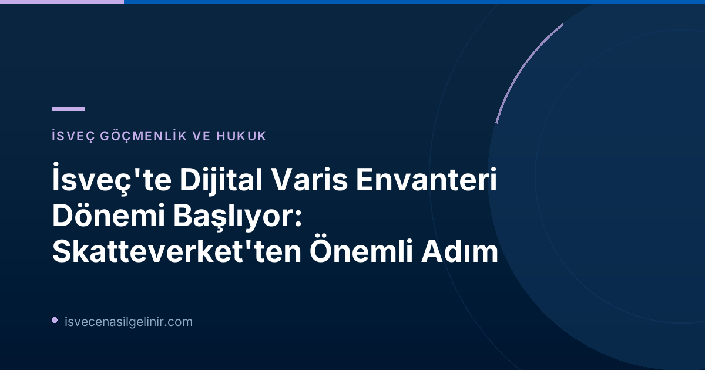

İsveç'te Varis Envanteri Kavramı ve Mevcut Durum
İsveç'te "bouppteckning", vefat eden bir kişinin malvarlığı ve borçlarının yazılı bir dökümüdür. Aynı zamanda, vefat edenin mirasçılarını da gösteren resmi bir belgedir. Bu işlem, genellikle hayatınızda bir veya iki kez karşılaştığınız, çoğu zaman da acı bir kayıp sonrası yapılması gereken hukuki bir zorunluluktur. Mevcut durumda, İsveç'te yılda yaklaşık 90.000 bouppteckning işlemi gerçekleştirilmektedir ve bu işlemlerin tamamı kağıt formunda, fiziksel belgelerle yapılmaktadır.
Skatteverket (İsveç Vergi Dairesi) birim şefi Anders Koskinen'in de belirttiği gibi: "Bouppteckning, hayatınızda belki de sadece bir kez ve genelde yas tuttuğunuz bir dönemde yaptığınız bir şeydir. Bu süreçte her şeyin mümkün olduğunca kolay olmasını isteriz – ve dijital bir hizmet bunu mümkün kılacaktır."
Dijitalleşme Yolunda Atılan İlk Adım: Yeni Yasa Resmi Gazetede
Uzun süredir beklenen bu modernizasyon ihtiyacına yanıt olarak Skatteverket, 2023 yılında hükümete bir yasa değişikliği teklifi sunmuştu. Bu teklif, kağıt tabanlı bouppteckning yapma zorunluluğunu ortadan kaldırarak dijital çözümlere zemin hazırlamayı hedefliyordu. Büyük bir memnuniyetle karşılanan bu öneri, 1 Temmuz 2026 tarihinde yürürlüğe giren yeni yasa ile resmileşti.
Bu yasal değişiklik, Skatteverket'in dijital bouppteckning çözümleri geliştirmesi için kapıyı aralamıştır. Ancak, Anders Koskinen'in vurguladığı gibi: "Yasadan dolayı çok memnunuz, bu daha hızlı, daha kolay ve daha verimli bir bouppteckning süreci için atılan ilk olumlu adımdır, ancak dijital bir çözüm devreye girene kadar tüm belgelerin hala fiziksel posta yoluyla gönderilmesi gerekmektedir."
Dijital Çözümün Beklenen Faydaları ve Zaman Çizelgesi
Skatteverket, yeni dijital hizmetin en erken 2027 yılında kullanıma sunulmasını öngörmektedir. Bu dijitalleşme adımıyla birlikte birçok önemli fayda beklenmektedir:
- Hata Oranının Azalması: Kağıt tabanlı sistemlerde sıkça karşılaşılan eksik belge veya yanlış doldurulmuş form gibi hataların önüne geçilmesi hedeflenmektedir.
- İşlem Süresinin Kısalması: Dijital başvuru ve otomatik kontrol sistemleri sayesinde dosya inceleme ve onay süreçlerinin hızlanması beklenmektedir.
- Kolaylık ve Erişilebilirlik: Vatandaşların, yas nedeniyle zaten zorlu olan bu süreci evlerinden veya diledikleri herhangi bir yerden daha kolay yönetebilmesi sağlanacaktır.
Bouppteckning Sürecinde Dikkat Edilmesi Gereken Önemli Noktalar
Dijital çözüm hazır olana kadar, mevcut kağıt tabanlı bouppteckning sürecinde hata yapma riskini en aza indirmek ve gecikmeleri önlemek için bazı önemli noktalara dikkat etmek büyük önem taşımaktadır. Aşağıdaki tablo, belgelerinizi Skatteverket'e göndermeden önce gözden geçirmeniz gereken kritik hususları özetlemektedir:
| Kontrol Edilecek Husus | Açıklama |
|---|---|
| Mirasçılarla İlgili Bilgiler | Tüm mirasçıların bilgileri eksiksiz ve doğru bir şekilde yer almalı. |
| Mirasçı Tanımlaması | Kişinin "dödsbodelägare" (vefat edenin mirasçısı) veya "efterarvinge" (ikincil mirasçı) olarak doğru işaretlendiğinden emin olun. |
| Malvarlığı ve Borçlar | Vefat edenin tüm mal varlığı ve borçları (örn. gayrimenkul bilgileri) eksiksiz ve doğru bir şekilde değerlenmiş olarak belirtilmeli. |
| Sağ Kalan Eş/Partner Bilgileri | Sağ kalan eş/partnerin mal varlığı ve borçları da eksiksiz ve doğru bir şekilde değerlenmiş olarak yer almalı (örn. gayrimenkul bilgileri). |
| Davet Kanıtı | Eğer biri işleme katılamadıysa, davet kanıtı (kallelsebevis) eklenmeli. |
| Vasiyetname | Vasiyetnamenin onaylı bir kopyası eklenmeli. |
| Teslimat Şekli | Bouppteckning belgesi orijinal olmalı, imzalı olmalı ve posta yoluyla gönderilmeli. |
İsveç'te vatandaşlık ve göçmenlik süreçleri ile ilgili daha fazla bilgiye ve kaynaklara ulaşmak için sverigemedborgarskapsprov.com adresini ziyaret edebilirsiniz.
Skatteverket'in web sitesinde bouppteckning ile ilgili daha fazla kontrol listesi ve detaylı bilgi bulunmaktadır. Dijitalleşme süreci tamamlandığında, bu bilgiler de güncellenerek daha modern bir erişim imkanı sunulacaktır.
Geleceğe Bakış
Dijital varis envanteri, Skatteverket'in vatandaş odaklı hizmet anlayışının önemli bir parçasıdır. Bu adım, idari yükün hafifletilmesi, bürokratik süreçlerin hızlanması ve aynı zamanda çevresel sürdürülebilirliğe katkı sağlaması açısından da büyük önem taşımaktadır. 2027 yılında devreye girmesi beklenen dijital platform ile İsveç, miras işlemlerinde modernizasyonu bir adım daha ileriye taşıyacaktır. Bu süreçleri takip etmeye devam edeceğiz ve gelişmeler oldukça sizleri bilgilendireceğiz.
İsveç'te Göçmenlik ve Vatandaşlık Süreçleri İçin Kapsamlı Rehberiniz
İsveç'e taşınma, çalışma, eğitim veya vatandaşlık alma süreçleri hakkında merak ettikleriniz mi var? Uzman ekibimiz size en güncel ve doğru bilgileri sunmak için burada. İsveç'teki yaşamınıza sorunsuz bir başlangıç yapın! İsveç Vatandaşlık Sınavı hizmetlerini inceleyin.